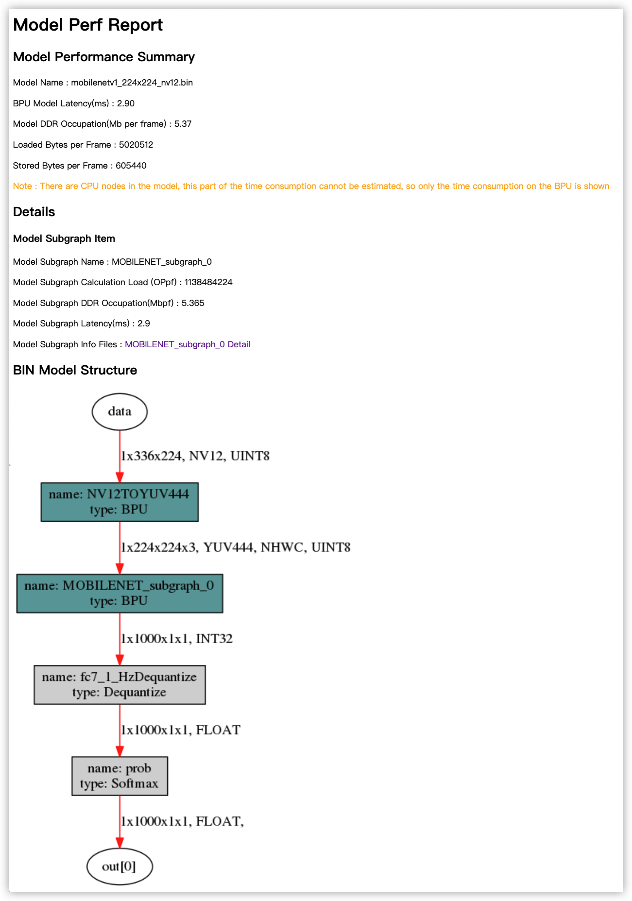

1.1. 模型转换过程详解
本节介绍如何使用浮点模型转换工具将Caffe、TensorFlow、PyTorch等开源框架训练好的浮点模型 转换成地平线硬件上支持的定点模型。 一般情况下，用户从官网下载或者自己训练得到的模型，其阈值、权重等均为浮点数(float32)，每个数占用4个字节。 但在嵌入式端运行时，若能将其内部数值从浮点数转化为定点数(int8)，则每个数只占用1个字节，因此计算量可以大大减少， 因此，若能在不损失或损失较小的情况下将浮点模型转换为定点模型，则其性能会有显著提升。
模型的转换通常可分为以下几个步骤：
检查待转换的模型中是否包含不支持的OP类型。
准备好20-100张校准使用的图片, 用于转换阶段的校准操作。
使用浮点模型转换工具将原始浮点模型转换为定点模型。
对转换后的模型进行性能和精度的评估, 确保转换后的定点模型精度与之前相差不大。
在模拟器/开发板上运行模型, 对模型的性能和精度进行验证。
模型转换步骤的流程图如下:
对应到工具使用方面, 各步骤说明如下
1.1.1. 模型检查（hb_mapper checker）
模型在从浮点转换为定点模型之前，我们首先需要通过工具 hb_mapper checker 子命令检查一下，看看该模型是否包含不能在地平线硬件上运行的OP。
如果存在，则会在该阶段提示不认识该OP，hb_mapper checker 子命令使用方式可参考 模型检查命令 一节内容。
若过程中存在不支持OP, 则会出现如下提示:
ERROR HorizonRT not support these cpu operators: {不支持的OP名称}
小技巧
有关地平线硬件可支持的OP信息, 请参见 算子约束列表 Excel表格。
若无不支持OP，则会输出模型转换后的各OP的列表，以及各OP被划分在CPU还是BPU上执行。 若验证结束且无报错，即可继续进行后续步骤。参见下图：
hb_mapper checker --model-type caffe --proto mobilenet_deploy.prototxt \
--model mobilenet.caffemodel --output ./mobilenet_checker.log --march bayes
2021-01-08 17:33:53,117 INFO Start hb_mapper....
2021-01-08 17:33:53,118 INFO hb_mapper version 1.1.42
...
fc7 BPU id(0) HzSQuantizedConv
prob CPU -- Softmax
2021-01-08 17:33:53,329 INFO [Fri Jan 8 17:33:53 2021] End to Horizon NN Model Convert.
2021-01-08 17:33:53,332 INFO model deps info empty
2021-01-08 17:33:53,351 INFO End model checking....
小技巧
若存在不支持OP，可咨询地平线技术人员相关OP开发计划，或者通过 自定义算子（Custom OP） 功能添加该OP。
1.1.2. 准备校准图片
在进行模型转换时，校准阶段需要20-100张图片输入进行校准操作。 由于模型的输入类型及layout的不同，输入的图片格式可以多种多样。 该阶段既可以输入原始图片（*.jpg等)， 也可以输入处理过的，满足模型输入要求的图片。 用户可以直接从模型训练时的数据集中获取相应的校准图片，也可以自行处理图片生成校准数据集。
推荐用户自行对校准图片进行前处理，将图片的通道(BGR/RGB)，数据排布(NHWC/NCHW)，图像大小及填充(Resize&Padding)等操作调整好后，
设置yaml文件(mobilenet_config.yaml) 中的 preprocess_on 参数为 False，那么工具则会通过二进制文件的方式将图片读入后送入校准阶段。
以MobileNet为例，则需要进行如下transformer的操作：
transformers = [
ShortSideResizeTransformer(short_size=256), # 短边Pad到256, 保持长宽比
CenterCropTransformer(crop_size=224), # 图像中心抠224*224的图像
HWC2CHWTransformer(), # 数据排布从NHWC转换到NCHW
RGB2BGRTransformer(data_format="CHW"), # 颜色通道从RGB转换为BGR
ScaleTransformer(scale_value=255), # 数据范围从 0-1 转为 0-255
]
小技巧
若模型训练时是bgr/rgb色彩空间的, 则校准阶段传入工具的图片数据需要是bgr/rgb色彩空间的， 工具内部会自动完成从bgr/rgb到yuv444/gray等的色彩转换。
例如：示例中的MobileNet模型实际输入设置为nv12，而02_preprocess.sh脚本转换结束后是bgr颜色空间的， 剩余的从bgr到nv12的转换是由工具内部自动补全的。
1.1.3. 模型转换( hb_mapper makertbin)
当用户通过上述 hb_mapper checker 子命令，确定了模型能够被转换成功，
接下来可以使用 hb_mapper makertbin 子命令来将浮点模型转换为一个可以在地平线硬件上运行的定点模型。
该命令需要用户传入待转换模型的模型类型(caffe / onnx )以及一个包含转换要求的配置文件(*.yaml)。
具体的配置文件设置，请参阅 配置文件详细介绍。
模型转换过程结束后，还会将原始模型与转换后的定点模型的相似程度打印在log中，
用户可根据 Cosine Similarity 字段来判断模型转换前后的相似度。
如下图所示，模型转换后的 Cosine Similarity 数值为 0.999979，非常接近1，
因此模型转换后的模型表现会与转换前的浮点模型非常相近。
config_file="./mobilenet_config.yaml"
model_type="caffe"
# build model
hb_mapper makertbin --config ${config_file} \
--model-type ${model_type}
2021-01-08 17:43:46,440 INFO Start hb_mapper....
2021-01-08 17:43:46,440 INFO hb_mapper version 1.1.42
[==================================================] 100%
2021-01-08 17:43:46,759 INFO [Fri Jan 8 17:43:46 2021] End to compile the model with march bayes.
2021-01-08 17:43:46,761 INFO The converted model node information:
==============================================================================================================
Node ON Subgraph Type Cosine Similarity Threshold
--------------------------------------------------------------------------------------------------------------
HZ_PREPROCESS_FOR_data BPU id(0) HzSQuantizedPreprocess 0.999920 127.000000
conv1 BPU id(0) HzSQuantizedConv 0.999842 2.559940
conv2_1/dw BPU id(0) HzSQuantizedConv 0.999256 2.133966
conv2_1/sep BPU id(0) HzSQuantizedConv 0.995973 3.251512
conv2_2/dw BPU id(0) HzSQuantizedConv 0.996667 4.495726
conv2_2/sep BPU id(0) HzSQuantizedConv 0.995154 3.279693
conv3_1/dw BPU id(0) HzSQuantizedConv 0.992424 1.789684
conv3_1/sep BPU id(0) HzSQuantizedConv 0.981011 2.076841
conv3_2/dw BPU id(0) HzSQuantizedConv 0.993213 2.566441
conv3_2/sep BPU id(0) HzSQuantizedConv 0.992284 2.730044
conv4_1/dw BPU id(0) HzSQuantizedConv 0.984590 1.333641
conv4_1/sep BPU id(0) HzSQuantizedConv 0.987756 1.989145
conv4_2/dw BPU id(0) HzSQuantizedConv 0.989942 1.448306
conv4_2/sep BPU id(0) HzSQuantizedConv 0.991055 1.371283
conv5_1/dw BPU id(0) HzSQuantizedConv 0.985354 1.045134
conv5_1/sep BPU id(0) HzSQuantizedConv 0.987632 1.385728
conv5_2/dw BPU id(0) HzSQuantizedConv 0.987450 1.103629
conv5_2/sep BPU id(0) HzSQuantizedConv 0.981723 2.221445
conv5_3/dw BPU id(0) HzSQuantizedConv 0.986487 1.131387
conv5_3/sep BPU id(0) HzSQuantizedConv 0.978281 2.255438
conv5_4/dw BPU id(0) HzSQuantizedConv 0.983563 1.431162
conv5_4/sep BPU id(0) HzSQuantizedConv 0.969904 2.731162
conv5_5/dw BPU id(0) HzSQuantizedConv 0.983270 2.782268
conv5_5/sep BPU id(0) HzSQuantizedConv 0.969922 2.790056
conv5_6/dw BPU id(0) HzSQuantizedConv 0.982679 2.973198
conv5_6/sep BPU id(0) HzSQuantizedConv 0.980009 1.219168
conv6/dw BPU id(0) HzSQuantizedConv 0.997174 1.343817
conv6/sep BPU id(0) HzSQuantizedConv 0.974033 0.643153
pool6 BPU id(0) HzSQuantizedConv 0.987925 16.120794
fc7 BPU id(0) HzSQuantizedConv 0.989311 6.020388
prob CPU -- Softmax 0.934038 --
2021-01-08 17:43:46,761 INFO The quantify model output:
========================
Node CosineSimilarity
------------------------
prob 0.934038
2021-01-08 17:43:46,762 INFO [Fri Jan 8 17:43:46 2021] End to Horizon NN Model Convert.
备注
该相似度为校准图片中的第一张的相似度情况，并不完全代表模型转换前后的精度。
在模型转换成功后，会在生成的文件夹 (默认为 model_output) 中生成如下文件：
原始浮点模型: ***_original_float_model.onnx。
优化后的浮点模型: ***_optimized_float_model.onnx。
定点模型: ***_quantized_model.onnx。
上板使用的混合模型: ***.bin。
这几个模型文件是模型转换的几个关键阶段产出的文件，并会在后续阶段使用到。
1.1.4. 单张图片的模型推理
在运行浮点模型转换之后，得到了定点模型，还需对其自身的正确性进行验证。
用户需要对模型的输入/输出结构比较了解，并能够正确地对模型输入图片做前处理以及模型输出的后处理解析，并自行编写模型运行脚本。 在此过程中可参照交付包中对应模型的示例代码。 代码逻辑如下:
from horizon_tc_ui import HB_ONNXRuntime
sess = HB_ONNXRuntime(model_file=FLAGS.model)
output = sess.run([output_name], {input_name: image_data})
使用该脚本后，便可通过输入单张图片验证其自身的正确性。该脚本的输入为一张斑马的图片，
在经过前处理将图片数据从rgb格式转换为nv12格式后，通过 HB_ONNXRuntime 命令传入模型进行推理，随后打印出其最可能的5个种类。
运行后的输出如下图所示, 最可能的类别是 label: 340。
I0108 18:11:47.398328 140427646048000 cls_inference.py:89] The input picture is classified to be:
label 340: prob 0.97
label 292: prob 0.02
label 282: prob 0.00
label 83: prob 0.00
label 的类别使用的是ImageNet的类别, 也可以在 01_common/test_data/classes.txt 中查到，
340 正是对应着斑马，因此该图片推理正确。
1.1.5. 模型精度验证
光对单张图片进行验证还不足以说明模型的精度，因此还有脚本对模型转换后的精度进行评测。
用户需要编写代码使模型能够循环推理图片，并将结果与标准结果进行比较，得到精度结果。
因为精度评测时，需要对图片进行 前处理，对模型数据进行 后处理，所以我们提供了一个示例Python脚本。
其原理与单张推理一致, 但需要在整个数据集上面运行。
使用该脚本后，便可通过读取数据集，对模型的输出结果进行评判，并输出评测结果。
运行该脚本耗费时间较长，但可以通过设置 PARALLEL_PROCESS_NUM 环境变量来设置运行评测的线程数量。
在执行结束后得到的输出如下图所示：
===REPORT-START{MAPPER-EVAL}===
0.7011
===REPORT-END{MAPPER-EVAL}===
可以看到转换后的定点模型精度为 0.7011。
备注
在不同的系统下，由于依赖库版本不同，转换得到的模型精度可能会略有差别。
同时由于版本更迭，得到的定点模型精度可能也会略有差别。
如果用户在使用模型转换工具后得到的定点模型有精度损失的话， 请与地平线技术团队联系并获取文档《浮点转定点精度损失定位Checklist》来进行问题查究。
1.1.6. 模型性能验证
模型在开发板上的运行帧率也是一个很重要的性能指标，未免去开发者架设开发板环境的麻烦，
我们可以直接使用 hb_perf 子命令对转换出来的模型进行性能分析。
在MobileNetv1示例中，运行命令 hb_perf mobilenetv1_224x224_nv12.bin 后，
即可在 hb_perf_result/mobilenetv1_224x224_nv12/ 目录下找到模型分析文件 mobilenetv1_224x224_nv12.html 。
[horizon@gpu-dev model_output]$ hb_perf mobilenetv1_224x224_nv12.bin
2022-05-19 14:42:42,303 INFO Start hb_perf....
2022-05-19 14:42:42,304 INFO hb_perf version 1.7.7
2022-05-19 14:42:42,348 INFO ********* mobilenetv1_224x224_nv12 perf **********
2022-05-19 14:42:42,457 INFO draw graph png finished.
2022-05-19 14:42:42,476 INFO get bpu model succeeded.
2022-05-19 14:42:42,787 INFO get perf info succeeded.
2022-05-19 14:42:42,787 WARNING bpu model don't have per-layer perf info.
2022-05-19 14:42:42,787 WARNING if you need per-layer perf info please enable[compiler_parameters.debug:True] when use makertbin.
2022-05-19 14:42:42,794 INFO generating html...
2022-05-19 14:42:42,795 INFO html generation finished.
2022-05-19 14:42:42,795 INFO file stored at : /home/users/horizon/codeWKS/tc_sys/j5_toolchain/samples/03_classification/01_mobilenet/mapper/model_output/hb_perf_result/mobilenetv1_224x224_nv12/mobilenetv1_224x224_nv12.html
从 mobilenetv1_224x224_nv12.html 文件中，我们可以看到模型整体的各项性能数据。 当模型分为多段时，还会对每一段在BPU上运行的部分单独有性能分析报告。
上图中各项性能分别为:
Model Name： 模型名称。BPU Model Latency(ms)：模型整体耗时(单位为ms)。Model DDR Occupation(Mb per frame)：模型运行的整体内存占用情况(单位为Mb/frame)。Loaded Bytes per Frame：模型运行每帧读取数据量。Stored Bytes per Frame：模型运行每帧存储数据量。
备注
上述 BPU Model Latency(ms) 是指模型中在BPU上执行部分的耗时，如果模型中有CPU上执行的部分，则该部分耗时未被计算在内。
1.1.7. [参考]支持的校准方法
目前我们支持了以下的校准方法：
max
max校准方法是在校准过程中，自动选择量化层中的最大值作为阈值。 这种方法会导致数据量化粒度较大，但也会带来比KL方法更少的饱和点数量，适用于那些数据分布比较离散的神经网络模型。
KL
KL校准方法是借鉴了TensorRT提出的解决方案 （http://on-demand.gputechconf.com/gtc/2017/presentation/s7310-8-bit-inference-with-tensorrt.pdf）， 使用KL熵值来遍历每个量化层的数据分布，通过寻找最低的KL熵值，来确定阈值。 这种方法会导致较多的数据饱和和更小的数据量化粒度，在一些数据分布比较集中的模型中拥有着比max校准方法更好的效果。
default
default是一个自动搜索的策略，会尝试从系列校准量化参数中获得一个相对效果较好的组合。
load
使用
QAT导出的模型时，需使用此参数
1.1.8. [参考]OP列表
若想了解更多关于当前工具链支持Caffe算子列表，请参见： 算子约束列表 Excel表格。